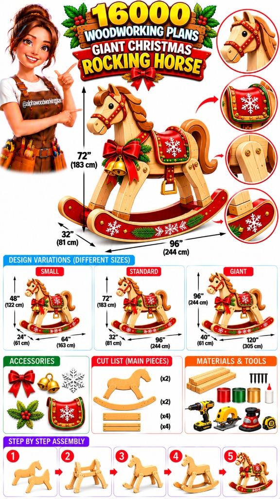

DIY Giant Christmas Rocking Horse – A Stunning Wooden Christmas Decoration
Build a Giant Wooden Rocking Horse With Beautiful Christmas Decorations, Festive Colors, and a Classic Holiday Look!

Looking for a unique Christmas woodworking project that will make your holiday decorations stand out? A giant wooden Christmas rocking horse could be the perfect DIY project!
With its traditional rocking-horse shape, beautiful wooden construction, festive red and green decorations, and oversized design, this project can become an eye-catching centerpiece for your Christmas display.
Whether you want to decorate your front porch, create a festive indoor display, or make a memorable handmade holiday decoration, this wooden rocking horse offers plenty of creative possibilities.
The design featured in this guide includes a wooden horse body, curved rocking runners, decorative saddle, wooden mane, tail, and beautiful Christmas accessories.
At AlphaWoodworkingPlan, we love sharing creative woodworking ideas that turn ordinary lumber into extraordinary projects. Let's explore how to plan and build this giant Christmas rocking horse!
1. Giant Christmas Rocking Horse Design
The illustrated design features a large wooden rocking horse with traditional Christmas decorations. Its natural wood appearance, red rocking runners, decorative saddle, and festive accessories create a beautiful holiday-inspired look.
Main Design Features
- 🪵 Large wooden horse body
- 🐴 Decorative wooden head and neck
- 🔴 Curved rocking runners in ruby red
- 🪜 Four angled supporting legs with double stretchers
- ❄️ Decorative saddle with snowflake patterns
- ✨ Sculpted wooden mane and tail
- 🎀 Plush red Christmas bow
- 🔔 Decorative bells and evergreen greenery
- 🛡️ Smooth, satin natural wood finish
Suggested Overall Dimensions
The main illustrated design uses these approximate dimensions:
These are visual design references. Final dimensions should be established using a full-scale drawing and structural calculations before cutting.
2. Choose Your Rocking Horse Size
One of the best things about this project is that you can customize the dimensions to suit your available space. Here are three suggested design variations:
Small Christmas Rocking Horse
- Height: 48 inches (122 cm)
- Length: 64 inches (163 cm)
- Width: 24 inches (61 cm)
This version is suitable for a smaller decorative indoor display, fireplace mantel surround, or boutique shop window.
Standard Christmas Rocking Horse
- Height: 72 inches (183 cm)
- Length: 96 inches (244 cm)
- Width: 32 inches (81 cm)
This is the main design featured in our blueprint illustration—a commanding 6-foot centerpiece for porches and foyers.
Giant Christmas Rocking Horse
- Height: 96 inches (244 cm)
- Length: 120 inches (305 cm)
- Width: 40 inches (102 cm)
An oversized 8-foot tall variation that makes an unforgettable festive landmark for shopping malls, outdoor holiday markets, or large commercial foyers.
Important Safety Notice: These are concept dimensions for a decorative holiday installation, not verified load-bearing plans. A giant rocking structure requires professional structural engineering assessment and heavy internal framing before anyone attempts to ride it.
Want to Build More Amazing Woodworking Projects?
From holiday decorations to backyard furniture, having clear woodworking instructions can make project planning much easier. If you want to explore more woodworking ideas, techniques, and project plans, check out this woodworking course.
Affiliate disclosure: We may earn a commission if you purchase through this link, at no additional cost to you.
3. Materials and Tools You'll Need
Before starting your Christmas rocking horse, prepare all the necessary materials and tools to ensure smooth, accurate workshop progress.
🪵 Main Materials
- Suitable solid lumber (2x4, 2x6, 4x4) for the structural horse frame
- 3/4" exterior-grade plywood or Baltic birch for body silhouette panels
- Solid clear lumber or laminated hardwood for the curved rocking runners
- Exterior wood screws, pocket screws, and heavy lag/carriage bolts
- Weatherproof exterior wood glue (Type III / polyurethane)
- Sandpaper assortment (80, 120, 180, and 220 grit)
- Exterior or interior wood finish, depending on final placement
- Festive holiday red, forest green, crisp white, and metallic gold paint
- Decorative saddle materials (contoured board, leather/felt backing)
- Christmas ribbons and wired velvet red bows
- Decorative brass or golden bells
- Artificial pine branches, cedar sprigs, and bright red winterberries
- Hand-carved or laser-cut wooden snowflake decorations
🛠️ Essential Tools
- Measuring tape and long carpenter's rule
- Pencil, marking chalk, and 12" combination square
- Circular saw for long straight rip and cross cuts
- Jigsaw or bandsaw for sweeping runner curves and horse profiles
- Cordless drill, impact driver, and Forstner/twist bit set
- Bar clamps, pipe clamps, and corner locking clamps
- Random orbital sander and contour sanding sponges
- Router with 1/4" and 3/8" roundover bits for easing edges
- High-quality synthetic bristle paintbrushes and foam detail rollers
- Eye protection safety glasses, dust respirator, and ear protection
Choose materials appropriate for the intended display location (porch vs. climate-controlled living room) and anticipated weather exposure.
4. Prepare the Wooden Horse Body
The horse body is the main visual element of this project. It should have a smooth, attractive silhouette with a balanced head, neck, body, and tail that immediately conveys the warmth of traditional craftsmanship.
Step-by-Step Instructions
- Draw the Silhouette on a Full-Size Template: Use heavy kraft paper, cardboard, or 1/8" hardboard to sketch the life-size horse silhouette, maintaining proportional ratios for the arched neck, head, and flanks.
- Mark Individual Sections: Delineate the head, neck, torso, and tail attachment zones to verify joint overlaps and structural fastener locations.
- Transfer to Quality Wood: Trace the template onto two matching 3/4" Baltic birch or exterior plywood panels (or solid laminated pine boards).
- Cut the Main Shapes: Using a sharp jigsaw blade or bandsaw, slowly cut just outside your traced lines, maintaining perpendicular 90° blade alignment.
- Sand Edges Smooth: Sand all rough cut lines down to the pencil line with an orbital sander (80 then 120 grit) to eliminate saw chatter marks.
- Dry-Fit Verification: Check that left and right torso panels match symmetrically and that interior spacers sandwich evenly between them.
Pro Builder Tip: For a decorative display, you can use layered wooden panels to create realistic muscular contour and depth around the shoulders and haunches.
5. Build the Supporting Legs
The legs connect the horse body to the curved rocking runners. For this decorative build, the legs must be securely joined, plumb across both axes, and properly splayed to achieve natural posture and rock-solid balance.
Construction Steps
- 📐 Prepare the Leg Templates: Cut four matching leg components from 2x6 or doubled 3/4" hardwood boards, angling the upper shoulder joints at a gentle 7° outward splay.
- 🪚 Cut Matching Wooden Components: Pair the front legs and rear legs with identical cut angles at the feet where they meet the curved rocker surface.
- ✨ Sand All Exposed Edges: Ease the long outer corners with a 1/4" roundover router bit to mimic sculptured wood carving.
- 📏 Position According to Drawing: Clamp the four legs onto the torso assembly, verifying equal side-to-side spacing and square stance.
- 🔩 Fasten with Heavy-Duty Joinery: Connect the legs to the inner frame using structural wood screws, pocket screws, and decorative carriage bolts with washers.
- 🔍 Check Alignment & Stability: Cross-brace the front leg pair and rear leg pair with horizontal stretchers to prevent racking or lateral wobbling.
Safety Warning: Avoid relying on decorative surface screws or glue alone for any oversized structure. Heavy mechanical fasteners and interlocking timber joints are required.
6. Create the Curved Rocking Runners
The curved runners are the defining visual hallmark of a heritage rocking horse. For this Christmas showstopper, they also provide an expansive wooden canvas for festive decorative scrollwork, holiday greetings, and snowflake accents.
Design Features
- Matching pair of 96" continuous curved wooden runners
- Smooth rounded bullnose edges along top and bottom
- Vibrant candy-apple red painted finish with gold striping
- Hand-stenciled white snowflake patterns
- Artificial pine needle sprigs and cedar accents
Building Tips
- Use a flexible thin wooden batten or trammel arm to draw a consistent arc before cutting.
- Both runners must have completely identical profiles; screw them together and sand both simultaneously.
- For a decorative display, install hidden bottom chocks or rubber leveler pads so the horse cannot accidentally roll or tip.
- Rideable functional rockers require structural calculations for arc radius and center of gravity that exceed purely decorative plans.
7. Add the Wooden Mane and Tail
The sculpted mane and tail breathe dynamic motion and character into the rocking horse. By layering individual contoured wooden sections, you create rich three-dimensional textures that catch the light beautifully.
Decoration Ideas
- Layered Mane Sections: Cut 3 to 5 overlapping scalloped locks from 1/2" clear pine or basswood and stagger them along the crest of the neck.
- Flowing Tail: Shape a sweeping, gracefully curved tail piece from 1" lumber, rounding over the flanks with hand rasps and sandpaper.
- Contrasting Finishes: Stain the mane and tail in a warm antique walnut or chestnut tone to create striking visual contrast against the blonde pine torso.
- Safety Sanding: Ensure every scalloped point is rounded over and thoroughly sanded with 220 grit so there are no splintered tips.
Ready to Take Your Woodworking Skills Further?
Want to explore more detailed woodworking projects instead of starting every design from scratch? Take a look at this woodworking course and discover whether its project plans and lessons are suitable for your experience.
This is an affiliate link. We may receive a commission if you purchase through it, at no additional cost to you.
8. Create the Christmas Saddle
The decorative saddle is one of the most eye-catching parts of this Christmas rocking horse. The illustrated design features a bright holiday red saddle with white snowflakes, emerald green borders, and simulated brass stirrup straps.
Saddle Decoration Ideas
- Red Painted Wooden Panel: Cut a curved saddle blank from 1/2" plywood, beveling the outer perimeter to give it cushioned dimension.
- White Snowflake Designs: Use precision mylar stencils or laser-cut wooden snowflake emblems painted bright satin white.
- Green Border Detailing: Paint a 1/2" emerald green trim along the saddle edge with gold paint pen scrollwork.
- Gold Decorative Accents: Add brass upholstery tacks or domed carriage bolt caps along the saddle pommel and cantle.
- Wooden Stirrups: Cut a pair of miniature wooden stirrup loops and hang them from matching leather or nylon straps.
Allow all paint and varnish coats to fully cure according to the manufacturer's instructions before mounting festive ribbons or handling.
9. Add Christmas Decorations
Now comes the most creative part! Transform your wooden horse into a showstopping Christmas holiday centerpiece with festive accessories:
🎀 Ribbon & Bells
Tie a large wired red velvet bow around the horse's neck collar, and suspend two golden brass jingle bells right below the bow.
🌲 Holiday Greenery
Affix artificial cedar and pine branches with vibrant red winterberries along the breast collar and runner tips using floral wire.
✨ Warm LED Glow
Weave battery-operated warm white fairy LED lights through the garland and along the runner curves for magical nighttime illumination.
For outdoor porch displays, ensure all electrical lights and wire connections are weather-rated (UL outdoor rated).
10. Sanding and Final Wood Finish
A smooth finish gives your rocking horse a professional, heirloom appearance that will endure holiday seasons for years to come.
The Finishing Process
- Multi-Grit Sanding: Sand all wooden surfaces thoroughly starting at 120 grit, progressing to 180 and finishing with 220 grit for a glass-smooth touch.
- Remove Dust & Residue: Use vacuum attachments and tack cloths to remove all wood dust before applying stains or paints.
- Natural Wood Body: Apply a golden oak, honey pine, or natural clear satin oil/stain to bring out the organic wood grain on the horse body and legs.
- Festive Paint Accents: Apply two coats of exterior satin red enamel to the curved runners and saddle, with white snowflakes and green borders.
- Protective Topcoat: Spray or brush three coats of exterior spar urethane (for porches) or clear satin polyurethane (for indoor living rooms).
- Cure Completely: Allow finishes to cure 48 to 72 hours before attaching fabric bows, garlands, or bells.
11. Where Can You Display Your Giant Christmas Rocking Horse?
This oversized festive woodworking project brings holiday magic to almost any holiday setting:
🏡 Front Porch Display
Place the decorative rocking horse near your front entryway alongside lighted potted pines and lanterns to create a warm, inviting welcome for guests and neighbors.
🎄 Living Room Centerpiece
Position the rocking horse beside the decorated family Christmas tree or stone fireplace hearth, surrounded by wrapped packages for a storybook holiday scene.
📸 Holiday Photo Corner
Create an unforgettable family holiday photo backdrop with festive lights, vintage gift boxes, garland arches, and the giant wooden rocking horse as the star attraction.
🏢 Holiday Event & Retail Decor
Use this oversized handcrafted build as a signature holiday centerpiece for church festivals, seasonal storefronts, hotel lobbies, or Christmas village displays.
More Christmas Woodworking Inspiration!
If you love seasonal woodworking projects, here are companion builds worth adding to your holiday workshop:
- ⭐ DIY Wooden Christmas Star
- 🦌 DIY Wooden Christmas Reindeer
- 🎄 Wooden Christmas Tree Shelf
- 💂 Giant Wooden Nutcracker Soldier
- 🎁 Rustic Wooden Gift Boxes
- 🎅 Wooden Santa Claus Display
- 🪵 Holiday Wooden Lanterns
- 🪧 Outdoor Christmas Welcome Signs
Looking for Even More Project Ideas?
Explore this comprehensive woodworking course and see what additional holiday plans, furniture blueprints, and beginner-to-advanced learning resources are available.
Affiliate disclosure: We may earn a commission from qualifying purchases through this link, at no extra cost to you.
12. Important Safety Tips
Before displaying your giant Christmas rocking horse, inspect the finished structure carefully against these essential guidelines:
- 🛡️ Fastener Security: Check that all structural joints, leg bolts, and runner fasteners are fully tight and recessed.
- 🪵 Splinter Removal: Thoroughly sand away any exposed sharp edges, burrs, or rough wood grain before public display.
- ⚖️ Tip Prevention: Ensure the display has adequate foot stance width and cannot tip over during gusty winds or crowded gatherings.
- 🛑 Secure the Runners: Install runner stop blocks or floor anchors so the horse cannot roll unexpectedly or pinch fingers and toes.
- 👶 Child Safety: Keep small detachable decorative bells, pins, and accessories securely fastened away from toddlers.
- ⚡ Electrical Caution: Keep lighting cables and transformers away from puddles, rain, and snow unless UL outdoor-rated.
- 🚫 Do Not Ride: Do not allow children or adults to ride the decorative structure. A giant decorative rocking horse is not a functional children's toy without professional load testing.
Frequently Asked Questions
How big should a giant Christmas rocking horse be?
The illustrated standard design is approximately 72 inches (6 feet) high, 96 inches (8 feet) long, and 32 inches wide. You can scale down to a 48" high small version for interior spaces or scale up to an 8-foot (96") tall version for large event foyers, provided you adjust structural bracing accordingly.
What wood is suitable for a Christmas rocking horse?
Kiln-dried SPF 2x4 and 2x6 lumber, clear pine, hard maple, and high-grade 3/4" Baltic birch plywood are ideal. For outdoor porches, choose exterior-grade fir, cedar, or pressure-treated components sealed with exterior spar urethane.
Can I build this project as a Christmas decoration?
Yes! A decorative, non-rideable version is a practical, achievable weekend woodworking project that creates an eye-catching holiday showpiece without complex weight-rated joinery calculations.
Can I make a functional rideable rocking horse?
A functional rocking horse requires an engineered structural design, carefully calculated rocker radii to prevent rearward tipping, mortise-and-tenon or heavy dowel joinery, and thorough load testing. Do not use the decorative dimensions as a rideable toy blueprint.
How can I decorate my wooden rocking horse?
Use vibrant red and emerald green paint for the runners and saddle, crisp white snowflake stencils, metallic gold bridle striping, plush velvet red bows, brass bells, faux pine garlands, and battery-operated warm white fairy lights.
Can I display the rocking horse outdoors?
Yes, provided all lumber, exterior wood glue (Type III), and paint finishes are rated for outdoor exposure. Seal the piece with multiple coats of UV-resistant spar varnish, anchor against winter wind gusts, and use outdoor-rated electrical accessories.
Final Thoughts
A giant Christmas rocking horse is a wonderful woodworking-inspired holiday decoration that combines traditional craftsmanship with festive creativity.
From its beautiful wooden body and curved runners to its decorative saddle, red bow, and Christmas accessories, every detail offers an opportunity to create something truly memorable for your home.
Whether you choose a small, standard, or giant decorative version, careful planning and quality finishing will make your project stand out for decades. Start with a clear design, prepare your materials, and enjoy creating a festive holiday masterpiece.
Save this project idea, gather your woodworking tools, and start planning your next Christmas DIY creation with AlphaWoodworkingPlan!
Affiliate Disclosure: This article contains affiliate links. If you purchase through these links, we may earn a commission at no additional cost to you.